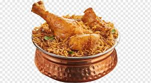

Biryani Recipe
List of content
- Image
- Description
- Ingredients
- Steps
Image:

Discription:
Biryani is a very popular dish in south Asia, especially
in sub-continent. People of Pakistan and India savor this
flavourful dish with yogurt and salad. Today we will help
you make this tasty dish which is a part of many cultures.
Ingredients:
Chicken Ingredients;
- 4 tablespoons vegetable oil, divided
- 4 small potatoes, peeled and halved
- 2 large onions, finely chopped
- 2 cloves garlic, minced
- 1 tablespoon minced fresh ginger root
- 2 medium tomatoes, peeled and chopped
- 1 teaspoon salt
- 1 teaspoon ground cumin
- ½ teaspoon chili powder
- ½ teaspoon ground black pepper
- ½ teaspoon ground turmeric
- 2 tablespoons plain yogurt
- 2 tablespoons chopped fresh mint leaves
- ½ teaspoon ground cardamom
- 1 (2 inch) piece cinnamon stick
- 3 pounds boneless, skinless chicken pieces cut into chunks
Rice Ingredients;
- 1 pound basmati rice
- 2 ½ tablespoons vegetable oil
- 1 large onion, diced
- 5 pods cardamom
- 3 whole cloves
- 1 (1 inch) piece cinnamon stick
- ½ teaspoon ground ginger
- 1 pinch powdered saffron
- 4 cups chicken stock
- 1 ½ teaspoons salt
Directions(Step by Step):
- Gather all ingredients
- Heat 2 tablespoons of oil in a large skillet. Fry potatoes in hot oil until lightly browned, about 3 to 5 minutes. Remove to a paper towel-lined plate to drain; set aside
- Add remaining 2 tablespoons of oil to the skillet. Add onions, garlic, and fresh ginger; cook and stir until onion is soft and golden. Add tomatoes, salt, cumin, chili powder, pepper, and turmeric; cook, stirring constantly, for 5 minutes
- Stir in yogurt, mint, ground cardamom, and cinnamon stick. Cover and cook over low heat, stirring occasionally, until tomatoes are cooked to a pulp. It may be necessary to add a little hot water if mixture becomes too dry and starts to stick to the pan
- Add chicken and stir well to coat. Cover and cook over very low heat until chicken is tender, 35 to 45 minutes. There should only be a little very thick gravy left when chicken is finished cooking. If necessary cook uncovered for a few minutes to reduce the gravy
- Meanwhile, make the rice: Wash rice well and drain in a colander for at least 30 minutes
- Heat oil in a large skillet. Add onion; cook and stir until golden. Add cardamom pods, cloves, cinnamon stick, ground ginger, and saffron; stir in rice until coated with spices
- Heat stock and salt in a medium pot until hot; pour over rice and stir well
- Add chicken mixture and potatoes; stir gently to combine. Bring to a boil
- Reduce heat to very low, cover with a tight-fitting lid, and steam for 20 minutes without lifting the lid or stirring
- Spoon biryani onto a warm serving dish